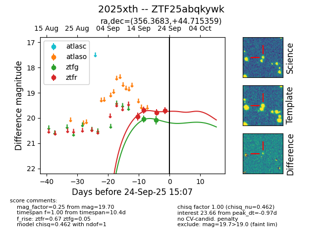
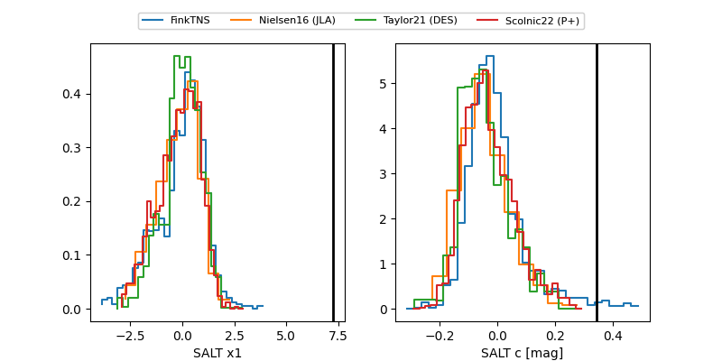

FINK: ZTF25abqkywk
Lasair: ZTF25abqkywk
ALeRCE: ZTF25abqkywk
TNS: 2025xth
YSE: 2025xth
ZTF25abqkywk (ztf,fink)
2025xth (tns,yse)
equatorial (ra, dec) = (356.3683,+44.71536)
galactic (l, b) = (110.7811,-16.59445)


last ztfg=20.09, ztfr=19.70
2 ztfg, 4 ztfr detections